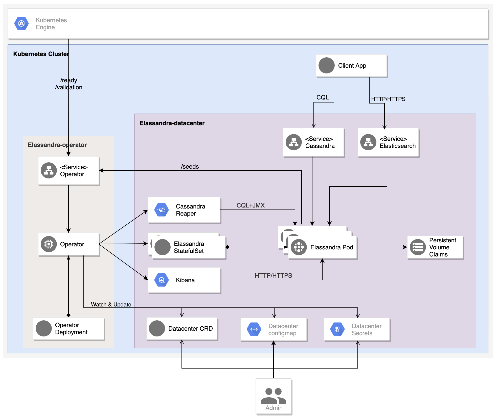

Overview¶
The Elassandra Kubernetes Operator automates the deployment and management of Elassandra clusters in multiple Kubernetes clusters**. By reducing the complexity of running a Cassandra or Elassandra cluster under Kubernetes, it gives you the flexibility to migrate your data to any Kubernetes cluster with no downtime and the freedom to choose your cloud provider or run on-premise.
Elassandra Operator features:
Manage one Kubernetes StatefulSet per Cassandra rack to ensure data consistency across cloud-provider availability zones.
Manage multiple Elassandra/Cassandra datacenters in the same or different Kubernetes clusters, in one or multiple namespaces.
Manage rolling configuration changes, rolling upgrade/downgrade of Elassandra.
Scale up/down Elassandra datacenters.
Park/Unpark Elassandra datacenters (and associated Kibana and Cassandra Reaper instances).
Implements Elassandra tasks to add/remove datacenters from an Elassandra cluster.
Deploy Cassandra Reaper and register keyspaces to run continuous Cassandra repairs.
Deploy multiple Kibana instances with a dedicated Elasticsearch index in Elassandra (Kibana spaces).
Expose Elassandra metrics for the Prometheus Operator.
Publish DNS names of Elassandra broadcast IP addresses using ExternalDNS.
Automatically generates SSL/TLS certificates and strong passwords stored as Kubernetes secrets (if not provided).
Create Cassandra roles and automatically grants the desired permissions on Cassandra keyspaces.
Depending on the number of running Elassandra nodes, automatically adjusts the Cassandra Replication Factor for managed keyspaces, repair and cleanup after scale up/down.
Provide a java AddressTranslator for the Cassandra driver allowing to run applications in the same Kubernetes cluster as the Elassandra datacenter (similar to the [EC2MultiRegionAddressTranslator](https://docs.datastax.com/en/drivers/java/3.7/index.html?com/datastax/driver/core/policies/EC2MultiRegionAddressTranslator.html) but for any Kubernetes cluster).
Requirements¶
Kubernetes cluster 1.15 or newer.
Kubernetes nodes must be properly synchronized with NTP.
Kubernetes worker nodes must have labels matching
failure-domain.beta.kubernetes.io/zone.HELM version 2 for operator and datacenter deployment.
Prometheus-Operator to monitor your the Elassandra operator and Elassandra cluster.
A Kubernetes Ingress Controller to expose Kibana, Cassandra Reaper user interface, and the Elassandra operator for cross kubernetes cluster discovery.
ExternalDNS to expose Elassandra datacenters to the internet world.
How It works¶
The Elassandra Operator extends the Kubernetes API by creating a Custom Resource Definition (CRD) defining a Cassandra/Elassandra datacenter
and creates a Kubernetes StatefulSet per Cassandra availability zone identified by the kubernetes label failure-domain.beta.kubernetes.io/zone.
The Elassandra Operator can also deploy : * One Cassandra Reaper pod per datacenter to achieve continuous Cassandra repair. * Many Kibana deployment allowing to visualize data indexed in Elasticsearch and interact with Elasticsearch.
Once Elassandra pods are deployed and running, the Elassandra operator interacts with the Elassandra nodes through JMX, CQLSH and HTTP to execute administrative tasks like Cassandra repair, cleanup or setup continuous repairs. It also interact directly with the Elassandra container to properly manage keyspace replication factor and deploy Cassandra roles and associated permissions.
Multi-datacenter cluster¶
The Elassandra operator can manage multiple Elassandra datacenters (or a Cassandra datacenter if Elasticsearch is disabled) in one or multiple Kubernetes clusters. In order to connect multiple Elassandra datacenters, you can use the DNS names of seed nodes, or use the operator to get IP addresses of seed nodes.
Using DNS names¶
Basically, seeds nodes are Elassandra pods with index 0 in each StatefulSet, and DNS names for these seed nodes are:
From inside the Kubernetes cluster, seeds DNS names are in the form:
elassandra-[clusterName]-[dcName]-[rackIndex]-0.elassandra-[clusterName]-[dcName]-[rackIndex].[namespace].svc
From outside the Kubernetes cluster, when the externalDns publication is enabled in your datacenter spec, DNS names for pods are in the following form, where podIndex=0 for seed nodes:
cassandra-[externalDns.root]-[rackIndex]-[podIndex].[externalDns.domain]
When an Elassandra node restarts with another IP address, the Kubernetes internal DNS is automatically updated, and the ExternalDNS operator also update your DNS zone.
In order to connect a datacenter dc1 to another datacenter dc2 in the Cassandra cluster cl1, you need to specify the remote seeds names in your datacenter spec. For example, if dc1 and dc2 respectively running in namespaces ns1 and ns2 in the same kubernetes cluster, you would have the following spec on dc1:
remoteSeeds:
- elassandra-cl1-dc2-0-0.elassandra-cl1-dc2-0.ns2.svc
- elassandra-cl1-dc2-1-0.elassandra-cl1-dc2-1.ns2.svc
- elassandra-cl1-dc2-2-0.elassandra-cl1-dc2-2.ns2.svc
If dc1 and dc2 are deployed in two Kubernetes clusters, you would have the following spec on dc1.
Of course, the externalDns.root must different in dc1 and dc2 to avoid DNS naming conflicts.
externalDns:
root: dc1
domain: my-domain.com
remoteSeeds:
- cassandra-dc2-0-0.my-domain.com
- cassandra-dc2-1-0.my-domain.com
- cassandra-dc2-2-0.my-domain.com
And on dc2:
externalDns:
root: dc2
domain: my-domain.com
remoteSeeds:
- cassandra-dc1-0-0.my-domain.com
- cassandra-dc1-1-0.my-domain.com
- cassandra-dc1-2-0.my-domain.com
Using the Elassandra operator¶
Elassandra nodes run a SeedProvider that can request multiple Elassandra operators to get seed node IP addresses for each datacenters.

The Elassandra operator HTTP endpoint /seeds/{namespace}/{clusterName}/{dcName} returns
the Cassandra RPC broadcast IP addresses of Elassandra seed pods, which are pods IP addresses by default.
If networking.hostNetworkEnabled=true or networking.hostPortEnabled=true in your Elassandra datacenter spec,
the Cassandra RPC broadcast address of an Elassandra pod running on the Kubernetes node will be :
The Kubernetes node external-IP if available,
or the IP address defined by the node label
elassandra.strapdata.com/public-ipif available,or the Kubernetes node internal IP address in last resort.
For example, if you run datacenter dc1 in the cluster cl1 in namespace ns1, you can connect to a remote datacenter dc2 deployed in namespace ns2 with the following datacenter spec. Of course, the elassandra-operator.my-domain.com must be properly resolved in your Kubernetes infrastructure.
remoteSeeders:
- https://elassandra-operator.my-domain.com/seeds/ns2/cl1/dc2